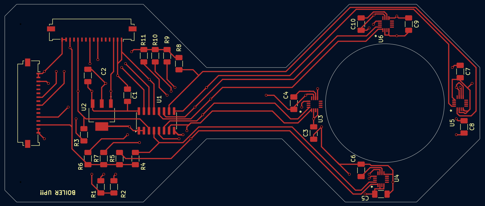
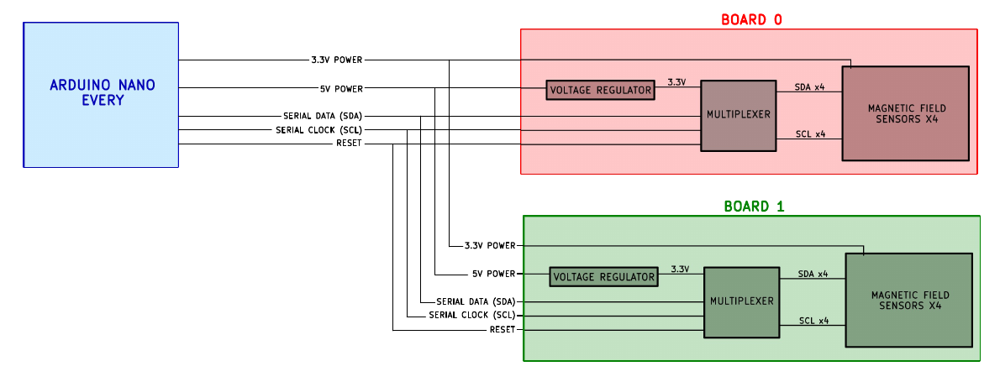
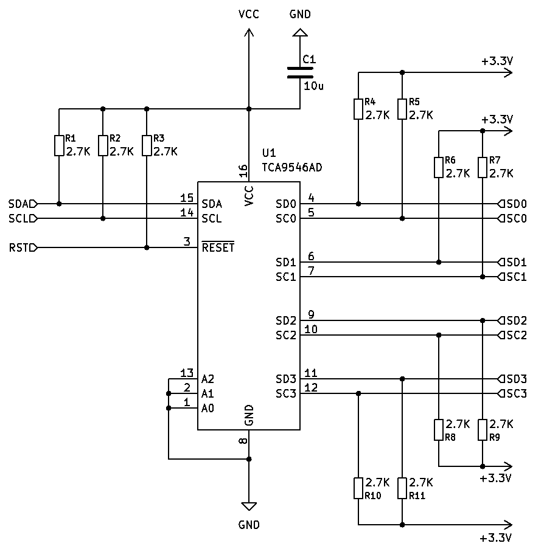
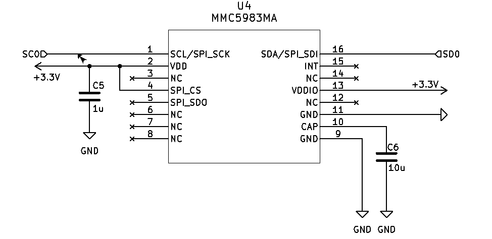
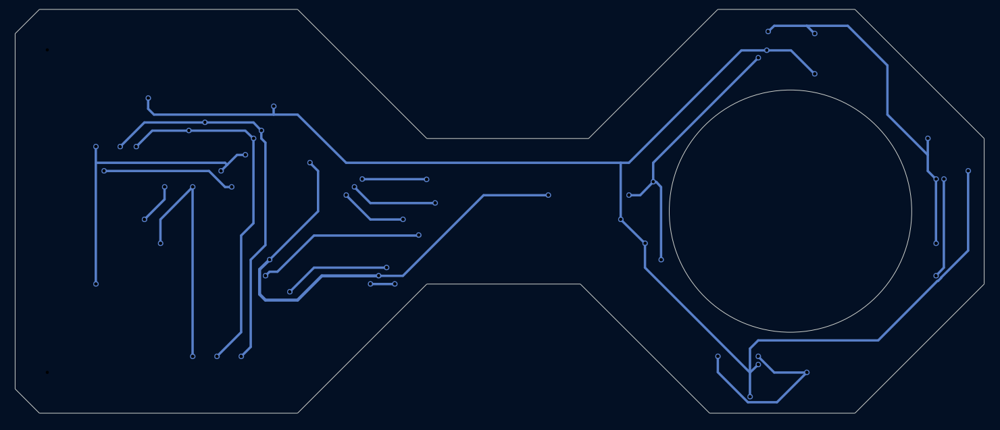
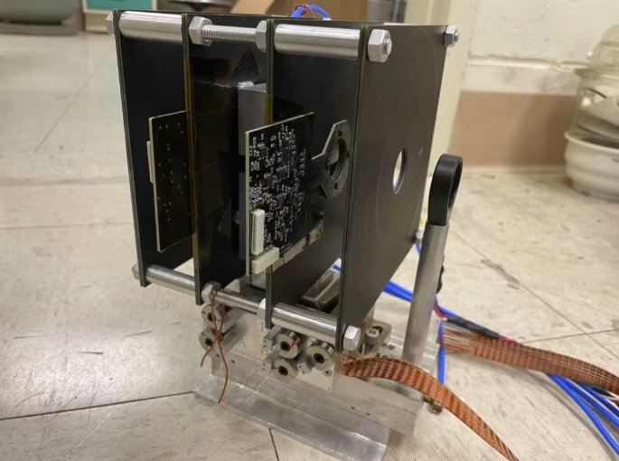

Multi-sensor magnetometer array
Two daisy-chained circuit boards that wrap around an optical cavity and estimate the magnetic field at its center, built for Dr. Daniel Elliott's Coherent and Quantum Optics Lab at Purdue.
- Sensors
- 8 MEMSIC MMC5983MA, 3-axis AMR
- Resolution
- 0.0625 mG per count, 18-bit
- Update rate
- About 10 Hz for all 8 sensors
- Bus
- I²C at 400 kHz through two TCA9546A switches
- Board
- 2-layer FR4, 50 × 120 mm, designed in KiCad
- My role
- Schematic, layout, firmware, Python logger, manual

- Control sectionRegulator, I²C multiplexer, connectors
- Routing neckKeeps current away from the sensors
- Sensor ringFour 3-axis magnetometers around the cavity
The problem
Quantum optics experiments are sensitive to stray magnetic fields. The lab needed to know the field at the exact spot where its optical cavity sits, inside a vacuum chamber, so it could be measured and cancelled with external coils.
A sensor can't sit at the center of the cavity, so the board has a circular cutout that slides over it, with four sensors at the 12, 3, 6, and 9 o'clock positions. Averaging their readings estimates the field at the center. A second identical board, mounted further along the cavity, adds four more sample points.

Design decisions
I²C instead of SPI
SPI's 10 MHz clock is 25 times faster than I²C's 400 kHz, but each sensor takes about 2 ms to convert a reading no matter how fast the bus is. Speed wasn't the bottleneck. SPI would have needed 36 traces for eight sensors, where I²C needs two shared lines.
A multiplexer, because every sensor has the same address
The MMC5983MA has a fixed I²C address (0x30), so eight of them on one bus would collide. A TCA9546A switch on each board connects one sensor at a time. The two switches use different addresses (0x70 and 0x71), which gives every sensor its own path.


The right capacitor for the regulator
The LM3940 regulator needs a 33 µF output capacitor with ESR between 0.3 and 22 Ω to stay stable. A ceramic capacitor has too little ESR and makes it oscillate, so the board uses tantalum.
Keeping the board from becoming noise
The hourglass shape is the noise strategy. Everything that carries real current sits in the control section, and only the eight signal traces cross the neck to the sensors. Near the sensors there are only ceramic capacitors, with no inductors or ferrite, and the board mounts with brass or nylon hardware.

Firmware and data
The firmware cycles through all eight sensors about ten times a second. For each one it selects the channel, triggers a measurement, waits for the conversion, reads 18 bits per axis, and converts to gauss. Zero field sits at count 131,072, and 16,384 counts equal one gauss.
// 18-bit raw counts to gauss
Bx = ((float)rx - 131072UL) / 16384.0f;
By = ((float)ry - 131072UL) / 16384.0f;
Bz = ((float)rz - 131072UL) / 16384.0f;Each sensor also has an on-chip SET/RESET coil. Taking a reading after each pulse and subtracting cancels the sensor's temperature-dependent offset, which matters on long runs. A Python logger records timestamped CSV data and flags any sensor that stops reporting.

What I'd change in revision two
Both boards came from one set of Gerber files to keep fabrication simple. That meant both multiplexers shipped with the same address, and one board had to be reworked by hand. A three-pad solder jumper would let each board pick its address.
I'd also wire the sensors' interrupt pin so the firmware stops polling, and add temperature tracking for long acquisitions. The design scales to eight boards, or 32 sensors, on one bus before the multiplexer runs out of addresses.
I started this project with no PCB experience. The part I'm proudest of is the 32-page reference manual, written so the next student can bring the system up from an unpowered board without asking me anything.